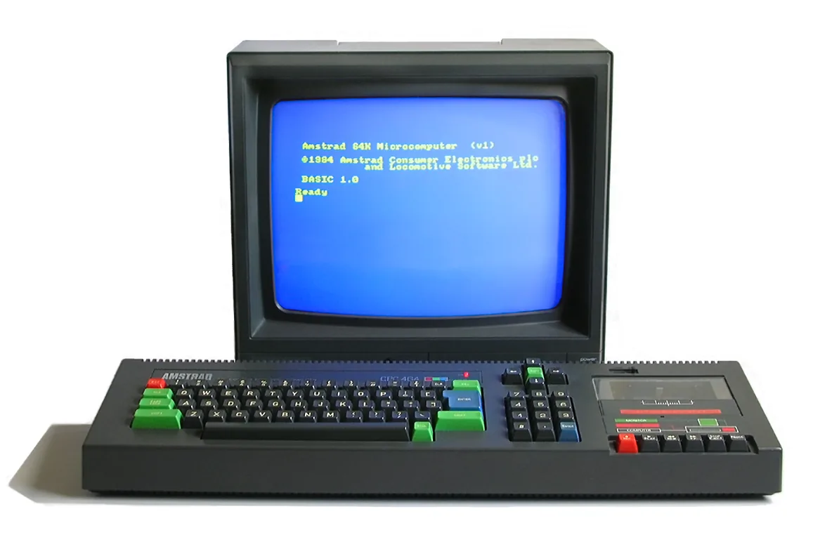
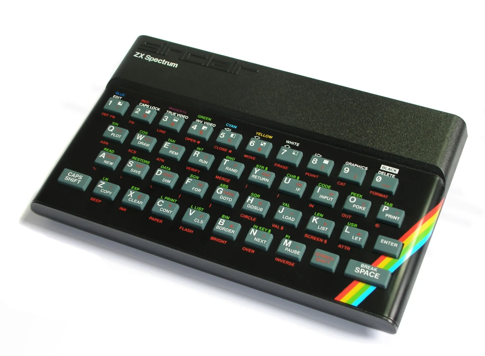
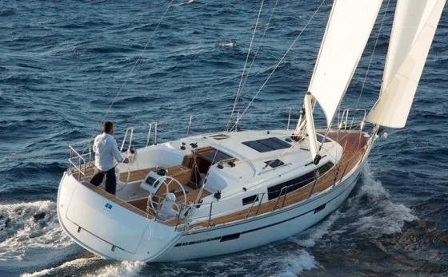

Okulun bende bıraktığı şey
Öğrencilik yıllarımın çoğunda okul benim için en keyifli ortamdı. Matematik ve fizik derslerinde dünyadan kopar, kendimden geçerdim. Okul asmak bir yana, hafta sonunun çabuk bitmesini istediğim zamanlar olurdu.
Okul benim için ezber yapılan bir yer değildi. Evrenin kurallarını keşfettiğim, soruların peşinden gittiğim bir oyun alanıydı. Bugün hâlâ her gün yeni bir şey öğrenmeye çalışırken o dönemin heyecanını taşıyorum. Aradan onlarca yıl geçmesine rağmen bazı öğretmenlerimle görüşmeye devam etmem de bunun güzel bir parçası.
Bilgisayarla açılan dünya
Yazılımla tanışmam Amstrad CPC 464 ile başladı. Yaz tatilinde, elimde kitapçığıyla bilgisayarı kurcalarken başka bir dünyanın kapısı açıldı. Sonra harçlıklarımı biriktirerek Sinclair ZX Spectrum aldım. Televizyona bağlanan, monitörü olmayan o küçük bilgisayarın başından neredeyse hiç kalkmaz hale geldim.
Aklıma gelen her şeyin programını yapmaya çalışıyordum. Bir gün arkadaşlarla adam asmaca oynamak yerine, önce oyunun programını yazmaya karar vermişim. O zaman farkında değildim ama bu eğilim hayatım boyunca sürdü: Bir şeyi yalnızca kullanmak değil, nasıl çalıştığını anlamak ve mümkünse yeniden yapmak.
Basic, Pascal, C ve yıllar sonra Python… Her yeni dil bana yalnızca yeni bir araç değil, başka türlü düşünmenin yolunu açtı. Kod yazmak benim için hiçbir zaman yalnızca bir iş olmadı; problemleri çözdüğüm, fikirleri denediğim ve üretmekten keyif aldığım bir alan oldu.


İş hayatı ve kendi yolumu kurmak
İş hayatına Türkiye’nin büyük şirketlerinden birinde başladım. Aradığımı bulamayınca ayrıldım ve daha küçük, daha hareketli yerlerde çalışmayı seçtim. Gazete ilanından başvurduğum küçük bir yazılım şirketinde, C bilmediğimi ama hızlı öğrenebileceğimi söyleyerek işe başladım. Kısa sürede büyük ve yoğun projelerin içinde bulundum.
Sonra kendi şirketimi kurdum. Eski bir binanın bahçe katında, ikinci el eşyalarla, tek başıma ve bir telesekreterle başlayan iş zamanla büyüdü. Çok farklı sektörlerde çözümler ürettik; müşteriler, ortaklıklar ve ekip büyüdükçe işin teknik tarafının yanı sıra insan, organizasyon ve karar verme tarafını da daha yakından tanıdım.
İkinci şirketimde laboratuvar ve hastane yazılımları geliştirdik. Şirket büyüdü, ekip kalabalıklaştı, sorumluluklar arttı. Bu dönem bana önemli bir şeyi gösterdi: Bir işi büyütebilmek ile o işin içinde kendin olarak kalabilmek aynı şey değil. Büyük ekipleri yönetmekten çok, teknik problemleri çözmeyi, üretmeyi ve yeni sistemler kurmayı sevdiğimi daha net anladım.
Bu deneyimler bana yalnızca ne yapabildiğimi değil, nasıl çalışmak istediğimi de öğretti.
Fizik hayatın içinden hiç çıkmadı
Motosiklet ve yelken, yazılımdan tamamen farklı hobiler gibi görünse de ikisinde de fizik kurallarının canlı biçimde işlediğini gördüm.
Motosiklet bana hazırlığın, dikkatin, sınırları bilmenin ve şartları zorlamak yerine onlara uyum sağlamanın önemini öğretti. Yüz binlerce kilometrelik yolun içinde teknik becerinin yanında sakinlik, iletişim, uyku, beslenme ve disiplinin ne kadar belirleyici olduğunu yaşayarak gördüm.
Motosikletin bana öğrettikleri
Yelken ise rüzgârı, dengeyi ve doğayla iş birliğini anlamanın başka bir yoluydu. Karşıdan gelen rüzgârla nasıl ilerlenir, düşük hızda kontrol nasıl korunur, ne zaman zorlamak yerine beklemek gerekir… Bunlar yalnızca teknede değil, işte ve hayatta da karşılığı olan sorular.
Yelken ve sınırlarKoçlukla değişen bakışım
Uzun süre hayatı daha çok sayılar, sistemler ve sonuçlar üzerinden değerlendirdim. Koçluk eğitimleriyle birlikte insan davranışlarının, kaygıların, önyargıların ve ilişkilerdeki görünmeyen dinamiklerin düşündüğümden çok daha belirleyici olduğunu fark ettim.
Yazılım sistemlerini insanlar kurar, insanlar kullanır ve insanlar değiştirir. En iyi teknolojinin bile arkasındaki insan ihtiyaçları, korkuları, alışkanlıkları ve organizasyonel gerçekler anlaşılmadığında etkisi sınırlı kalır.
Bu bakış, hem işime hem de ilişkilerime başka bir derinlik kattı. İnsanların söylediklerinin yanında söylemediklerini, çözüm aradıklarının yanında neyi korumaya çalıştıklarını daha fazla merak etmeye başladım.
Bugün
Bugün yazılım, yapay zekâ, sistem tasarımı ve insan gelişiminin kesiştiği alanlarda çalışıyorum.
Bir yandan üretim planlama, satın alma, stok yönetimi ve karar destek süreçleri için yapay zekâ destekli çözümler geliştiriyorum. Diğer yandan, insanların alışkanlıklarını değiştirmelerine, düşüncelerini daha net görmelerine ve kendi gelişim süreçlerini sürdürülebilir hale getirmelerine destek olabilecek yapılar üzerine çalışıyorum.
İlgimi çeken şey yalnızca güçlü bir teknoloji üretmek değil. Teknolojinin insan hayatında gerçekten işe yaradığı, anlaşılır, güvenilir ve sürdürülebilir bir yere oturması.
Yeni başlangıçlar
Hayatın bazı dönemleri insanı, neyi gerçekten önemsediğini yeniden düşünmeye zorluyor. Benim için de son yıllar, daha sade bir hayat kurmaya, daha sahici ilişkiler kurmaya ve zamanımı neye vermek istediğimi yeniden seçmeye dönüştü.
İstanbul’a yerleşmemle birlikte yeniden üretmeye, öğrenmeye ve kod yazmaya daha çok alan açtığım bir döneme girdim. Üniversite yıllarımdaki o merak duygusunu yeniden hatırladım: Sabah erken saatlerde çalışmaya başlamak, yeni bir fikri denemek, gün içinde öğrenilen bir şeyi hemen bir projeye dönüştürmek.
Bugün kendimi, geçmişte yaptıklarımdan çok bugün hâlâ öğrenmeye devam eden biri olarak görüyorum.
Birlikte düşünebiliriz
Buraya kadar okuduysanız, muhtemelen bazı konulara benzer yerlerden bakıyoruz.
Yapay zekâ, otonom sistemler, üretim ve karar süreçleri, motosiklet rotaları, yelken seyirleri ya da hayatın karmaşık algoritmaları üzerine samimi bir sohbet etmek isterseniz bana yazabilirsiniz.
E-posta: barankaya@yahoo.com